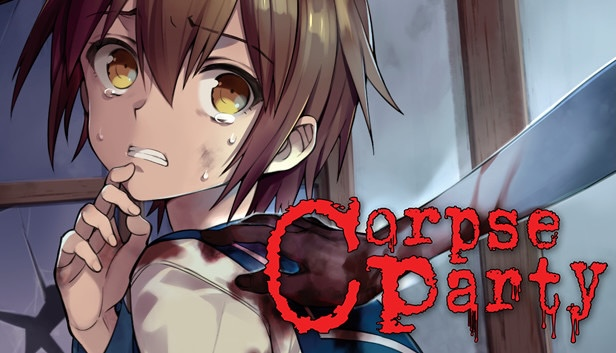
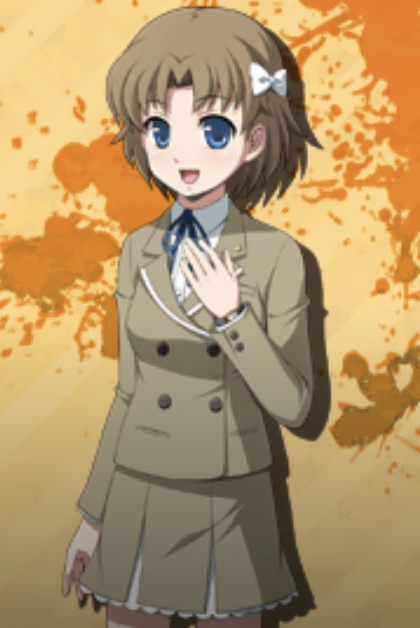
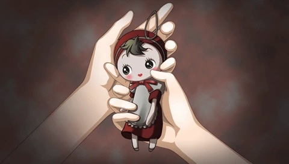
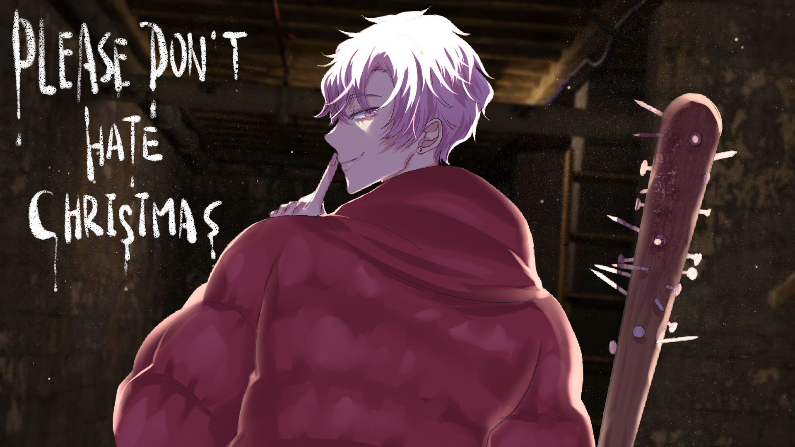

Corpse Party
Monique worked with Syndromedia to bring an English speaking voice
to characters 'Nana Ogasawara' and 'Antique Doll' in Corpse Party
Extra Chapter 1, and Corpse Party Chapter 2.
Nana Ogasawara is a student from Musashigawa Girl's Middle
School, who found herself in a terrifying situation after
performing a dangerous ritual. Monique strived to capture the
sweet and kind nature of Nana's voice to bring some comfort and
optimism to this quite spooky game.

In contrast to this, the high-pitched creepy voice of the 'Antique
Doll; is the last thing one would want to hear while walking
through a haunted school. Monique was satisfied with her work when
her cast mates listened to her performance as the Antique Doll and
went 'screw that'.


Please Don't Hate Christmas
Monique was happy to work with Syndromedia again, providing her
voice for 'Mother' and other additional voices in Please Don't
Hate Christmas (created by RiceLoveCoffee).
She enjoys the uniqueness of this game and is entertained by the
idea of playing the MC's mother. To each one of her friends who
plays the game, she goes “I am your mother now.”